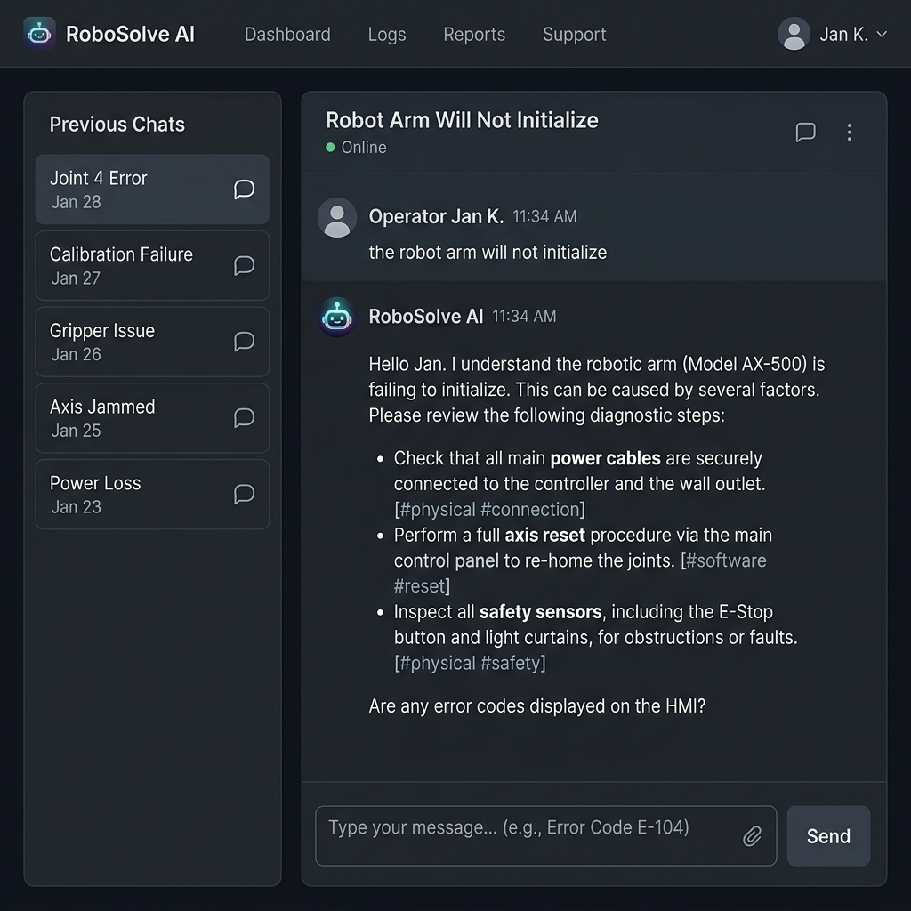

LLM-powered AI Agents for Robotic systems
Lead developer of a robotic startup's AI agent stack

Description
I designed, implemented, and deployed a production-grade AI Agent stack for Conbotics to answer troubleshooting questions for complex painting robots. To ensure maximum data privacy and system resilience, the entire stack was deployed directly on an **NVIDIA Jetson** edge device operating onboard the robot. The system was designed to move far beyond a basic chatbot, turning into a persistent, compound knowledge system that operates locally on the edge.
Key Engineering Capabilities
- 1. Confidences-Sorted RAG: Diagnostic recommendations are retrieved directly from technical manuals, dynamically sorted by success probability.
- 2. Hybrid Search: Combines semantic vector matching (nomic-embed-text) with precise alphanumeric BM25 keyword matching to accurately capture exact industrial error codes.
- 3. Context-Aware Grounding: Grounded in a global system profile explaining the robot's physical layout (Mobile Base, Spray Arm, Paint Pump, Lidar, Cameras).
- 4. Customer Chat Ingestion: Ingested historic customer chat transcripts to extract 140+ tribal knowledge facts and diagnostic heuristics.
- 5. Layered Troubleshooting Hierarchy: Resolves issues across different abstraction layers, ranging from high-level tablet instructions down to electronic, mechanical, and low-level software failures.
- 6. LLM Wiki (OKF): Implemented Karpathy's LLM Wiki structure (now called OKF) to compile raw files once into a clean symptom-to-solution structure, enabling fast, low-cost local LLM execution.
- 7. 3-Tier Memory Architecture: Features Working memory (active chat session context), Episodic memory (summarized log of past sessions), and Semantic memory (permanent universal wiki).
- 8. Dynamic Feedback Loop: Automatically processes user-submitted fixes and reinforces or downgrades solution confidence scores based on operator feedback.
- 9. Clarification Interaction: Mitigates hallucination by prompting the user for details or admitting ignorance when confidence thresholds are not met.
- 10. Software-Hardware Linkage: Pre-loaded with ROS, C++, Python, and kernel best practices. The agent analyzes robot source code directly to map physical hardware symptoms (e.g., painting stops) to underlying software bugs (e.g., Lidar scan queue overflow).
Note on Software-Hardware Linkage: This codebase-to-hardware mapping is extremely powerful, and I am currently working on isolating it to offer it as a standalone diagnostic tool for robotic operations.
Technologies Used
- Ollama (Local LLM & Embedding Inference)
- Qwen2.5-7B & Nomic-Embed-Text
- ChromaDB Vector Store + BM25 Hybrid Search
- Asynchronous Multi-threading (Python Daemon Threads)
- Streamlit Frontend UI
- NVIDIA Jetson Edge Deployment
- Docker / Docker Compose (NVIDIA GPU Container Runtime)
- Python
Links